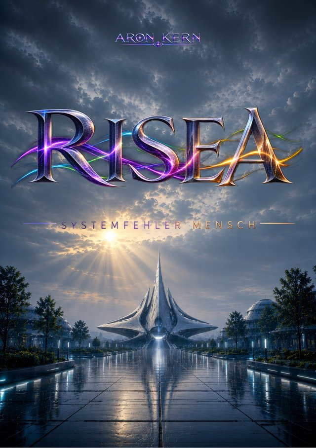
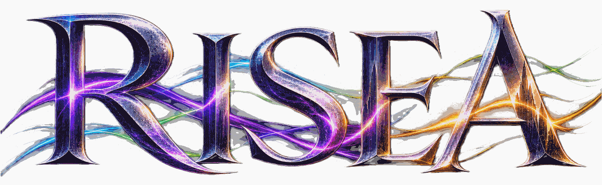

E-Book auch in Kindle Unlimited lesbar
Das Taschenbuch gibt es auch hier:
ISBN 978-3-69635-840-2
oder in jeder Buchhandlung vor Ort bestellen
Dystopische Science-Fiction
Band 1 der Reihe
Fünf Mauern. Vier Chips. Eine, die zu viel sieht.


E-Book auch in Kindle Unlimited lesbar
Das Taschenbuch gibt es auch hier:
ISBN 978-3-69635-840-2
oder in jeder Buchhandlung vor Ort bestellen
Aus Kapitel 2 · Die Freunde
„RISEA!"
Sie riss die Augen auf.
Auf der anderen Straßenseite kam er. Blonde Locken, die bei jedem Schritt wild um seinen Kopf flogen. Trainingsanzug, Schweiß auf der Stirn, ein Grinsen, das er nicht versteckte. Er rannte nicht wie jemand, der zu spät war. Er rannte wie jemand, der zeigen wollte, dass er rennen konnte.
Risea verschränkte die Arme.
Paxe nahm nicht den Überweg. Natürlich nicht. Er nahm Anlauf, sprang – eine Körperlänge über den Bordstein, die andere über die Straße – und landete zwei Schritte vor ihr in einer Pose, die mit Sicherheit nicht spontan war.
Er atmete schnell. Seine grüne Haarsträhne hob sich deutlich im Abendlicht ab.
„Kommst du jetzt erst raus?"
„Ich hatte noch etwas zu erledigen", sagte Risea.
„Was denn?"
„Nichts."
Er sah sie an. Nicht ungläubig – eher so, wie er sie immer ansah, wenn er merkte, dass sie log, und entschied, es diesmal nicht zu sagen. Das machte er oft. Es war einer der Gründe, aus denen sie ihn mochte.
Sie mochte ihn zu sehr. Das war das Problem.
Was von der Menschheit blieb, lebt hinter Mauern: fünf ummauerte Wohngebiete, streng voneinander getrennt — Kreise aus Licht mitten in einer toten Welt. Im ersten ruht das Schiff, mit dem alles begann.
Sicher, versorgt, dankbar ihren unsterblichen Rettern. Jeder Mensch erhält einen Chip, jeder Chip eine Farbe, jede Farbe einen zugeteilten Platz. Das System funktioniert seit Generationen — bis Risea anfängt, die Fragen zu stellen, für die niemand einen Platz vorgesehen hat.
Sie ist kein Fortschritt. Sie ist der Fehler im System.
Bilder aus der Welt von Risea. Ein Album wählen, ein Bild antippen zum Vergrößern.
Wer die Chips trägt, wer sie vergibt — und was jede Strähne über ihren Träger verrät. Eine Akte antippen für die vollständigen Daten.
Träger der vier Chips. Jede Strähne verrät, was in ihnen eingepflanzt wurde — und was die Cylio aus ihnen machen wollen.
Sie greifen nie direkt an. Der Widerstand ist erlaubt — weil er Teil des Plans ist.
Jeder Mensch erhält bei der Vergabe genau einen Chip. Er perfektioniert — und verändert. Die Farbe der Strähne folgt der Farbe des Chips.
Der fast durchsichtige Chip, nicht größer als ein Fingernagel, wird nach erfolgreich abgeschlossenem Gehirnscan an der Stelle platziert, an der die Fähigkeit im Gehirn sitzt. Richtig eingesetzt fördert er zunächst das Wachstum der Synapsen, um die Fähigkeit zu trainieren, oder aktiviert Regionen, die die Evolution dem Menschen noch nicht bereitgestellt hat. Das Training verlangt enorme körperliche Ressourcen — je nach Fähigkeit verbraucht der Träger große Mengen an Energie.
❯ Karte antippen für die vollständige Beschreibung jedes Chips
Vorgeschichten aus der Welt vor Band 1 — jede aus dem Inneren einer Figur erzählt. Eine Geschichte antippen für die Leseprobe.
Alle Kurzgeschichten aus der Welt von Risea in einem Band — jede aus dem Inneren einer Figur erzählt, jede für sich lesbar, alle zusammen das Fundament von Band 1.
Erscheint am 1. Dezember 2026